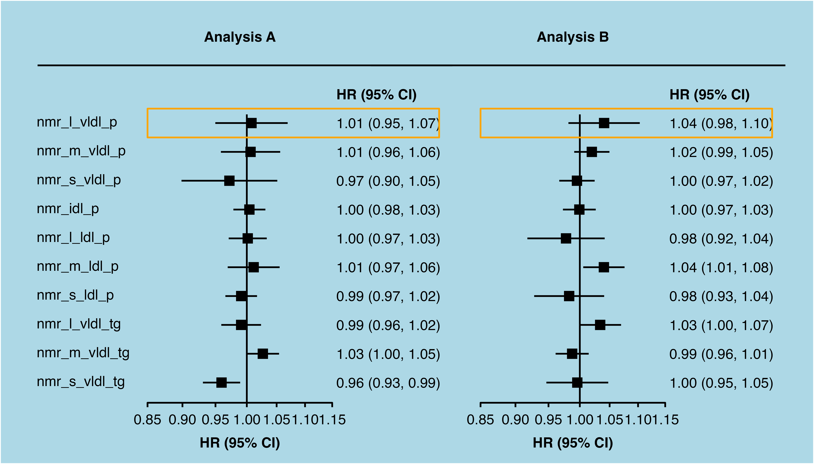
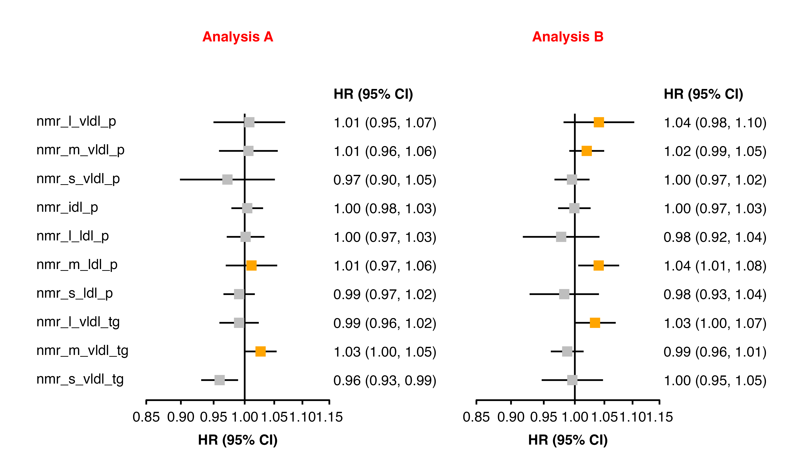
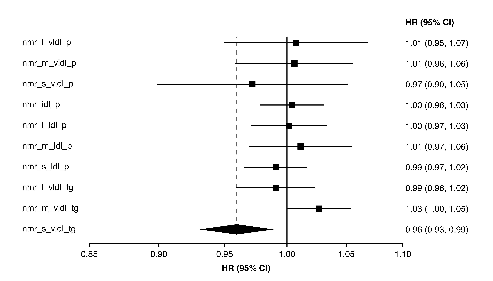

The make_shape_plot() and make_forest_plot() functions generate code to produce plots. Beyond the function arguments, there are some further methods to change the generated code to produce customised plots.
The plots returned by make_shape_plot() and make_forest_plot() are ggplot objects, so you can use + to add more layers or adjust the theme.
forest <- make_forest_plot(panels = list(resultsA, resultsB),
col.key = "variable",
panel.headings = c("Analysis A", "Analysis B"),
showcode = FALSE,
printplot = FALSE)
forest$plot +
annotate(geom = "segment",
x = 0.71,
y = 1,
xend = 1.4,
yend = 1) +
annotate(geom = "polygon",
x = c(0.85, 1.37, 1.37, 0.85),
y = c(-0.5, -0.5, -1.5, -1.5),
fill = NA,
colour = "orange") +
theme(plot.background = element_rect(fill = "lightblue"))
The addcode argument in make_shape_plot() and make_forest_plot() can be used to add additional code to the plot code created by the functions.
The argument should be a character vector. The first element defines where the code is added. It will be matched (as a regular expression) to the first line of the generated code (trimmed of any whitespace). The remaining elements will then be inserted as code just before this line. For example, to insert code before the line “# Plot points at the transformed estimates”, set “# Plot points at the transformed estimates” as the first element.
We wish to use geom_segment() to add dashed lines to the plot, and these should be added to the plot before the point estimates:
forest <- make_forest_plot(panels = list(resultsA, resultsB),
col.key = "variable",
panel.headings = c("Analysis A", "Analysis B"),
exponentiate = TRUE,
colour = "grey",
addcode = c("# Plot points at the transformed estimates",
"# Plot dashed line",
"geom_segment(aes(x = estimate_transformed, xend = estimate_transformed, y= -row, yend = -1),",
"linetype = 'dashed',",
"data = ~ dplyr::filter(.,row.label=='nmr_s_vldl_tg')) +",
""))
#> Warning in sprintf("%s$", extension, ignore.case = TRUE): one argument not used
#> by format '%s$'
The addaes and addarg arguments in make_shape_plot() and make_forest_plot() can be used to add additional aesthetics and arguments code to the ggplot layers created by the functions. These arguments must be named lists of character strings, and the names of elements defines where the aesthetics/arguments code is added.
In make_shape_plot() the following names will add aesthetics and arguments to layers:
| name | layer that plots |
|---|---|
| lines | lines of linear fit through estimates |
| point | point estimates |
| estimates | text of estimates |
| n | text of number of events (n) |
| ci | confidence intervals |
In make_forest_plot() the following names will add aesthetics and arguments to layers:
| name | layer that plots |
|---|---|
| ci | confidence intervals |
| point | point estimates |
| col.right | col.right columns |
| col.left | col.left columns |
| xlab | x-axis label |
| panel.name | names above panels |
Where duplicate aesthetics/arguments might be defined and created, they are kept with the priority:
This can be used to ‘overwrite’ some of the code that would otherwise be produced by make_shape_plot() and make_forest_plot().
forest <- make_forest_plot(panels = list(resultsA, resultsB),
col.key = "variable",
panel.headings = c("Analysis A", "Analysis B"),
ciunder = TRUE,
addarg = list(panel.name = "colour = 'red'"),
addaes = list(point = "colour = dplyr::if_else(estimate_transformed > 1.01, 'orange', 'grey')"))
#> Warning in sprintf("%s$", extension, ignore.case = TRUE): one argument not used
#> by format '%s$'
The make_shape_plot() and make_forest_plot() functions return plot code in a character vector. You could change elements of the vector to customise the code, then parse and evaluate it using eval(parse(text = plotcode)).